Anleitung zur Benutzung von Eduversum
Allgemeines
Im Eduversum sind in einem ansehnlichen Umfange bildungsrelevante Programme aufgelistet, die durch die seminarix-Ersteller favorisiert werden. Davon ist leider nur gewisse Anzahl von Programmen auf der Live-CD vorinstalliert, da der Umfang einer Live-CD auf ca. 700 MB begrenzt ist.
Da aber auch Programme vorgstellt werden, die nicht auf der Live-CD enthalten sind, wird das Handling mit diesen Programmen in diesem HowTo im Weiteren kurz beschrieben.
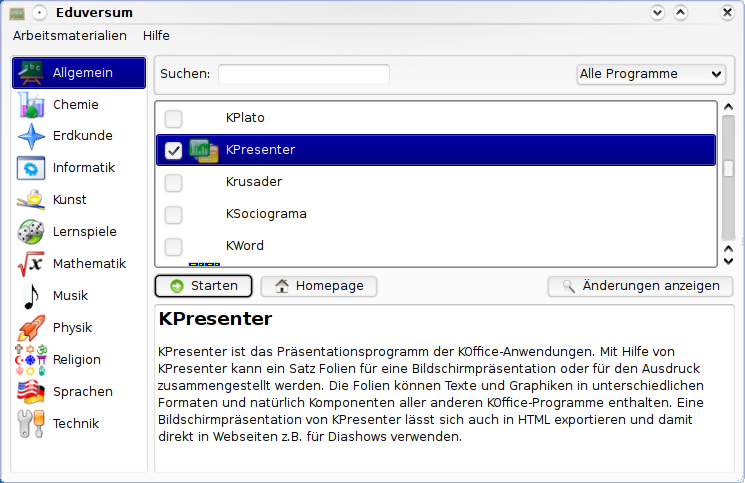
Durch Doppelklick auf das Programm-Icon oder Klick auf < Starten > wird das jeweilige installierte Programm gestartet.
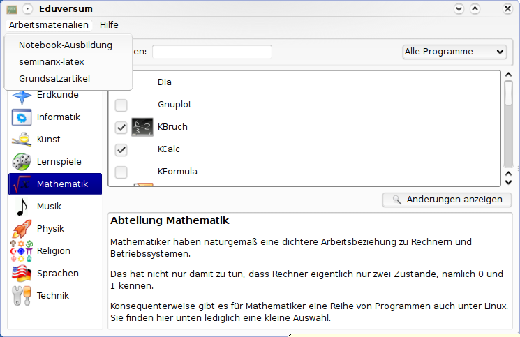
Unter dem Menüpunkt "Arbeitsmaterialien" können Arbeitsmaterialien (Beispiele), Artikel zu seminarix und Freier Software gefunden werden.
Installation von nicht installierten Programmen
Dazu ist im Auswahlfenster oben rechts der Menü-Punkt < Nur nicht installierte > auszuwählen.
Bei vorhandener Internetanbindung ist es möglich auch nicht auf der CD enthaltene, aber im Menüsystem aufgeführte Programme einfach zu installieren.
Dafür wird das entsprechende Programm (hier als Beispiel „NoteEdit“ ) markiert und der Button < Änderungen anzeigen > geklickt.
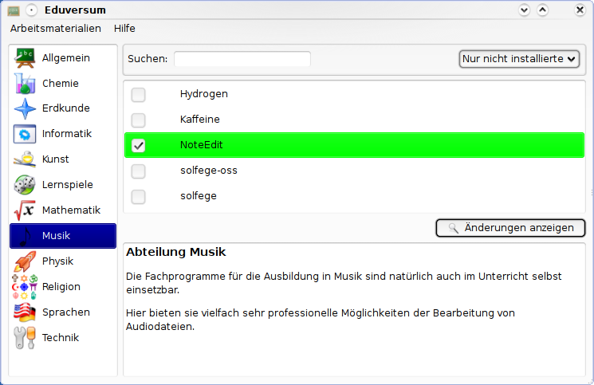
Nun wird der Button (Knopf) < Änderungen ausführen > angeklickt um die Installation des Programms zu starten.
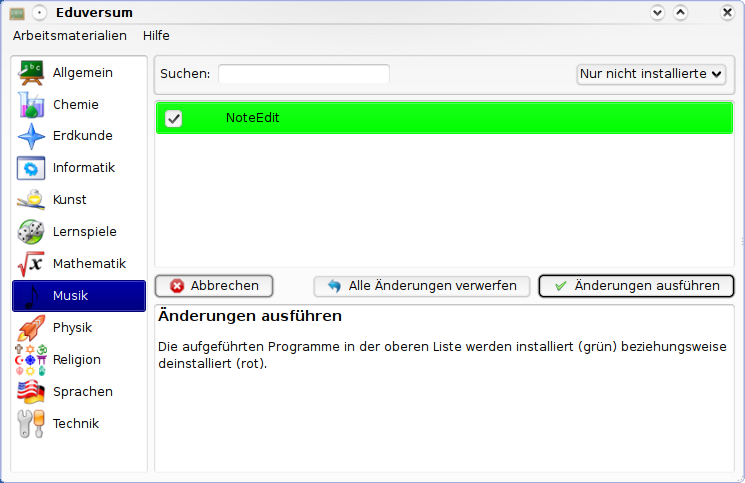
Wie gesagt, eine funktionierende Internet-Anbindung ist notwendig!
Ein "root acount" muss natürlich vorhanden sein, ansonsten wird hier die Installation abgebrochen.
Dies dient zur eigenen Sicherheit.
- Nur "root" hat auf Linux-Systemen Zugang zu systemspezifischen Daten und Einstellungen. Dadurch ist das System vor Missbrauch sicherer.
- Die unbefugte Installation eines Programmes wird damit unterbunden.
- Auf diese Art wird unüberlegtes Handeln verhindert.
Weitere Informationen zu diesem Thema können in den entsprechenden Tutorien gefunden werden.
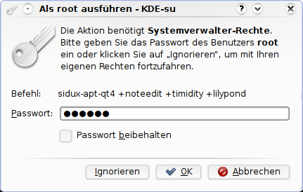
Das "root" Passwort eingeben und auf < OK > klicken.
Nun sollte die interne Paketdatenbank auf den aktuellsten Stand gebracht werden.
Resynchronize the package […] markieren.
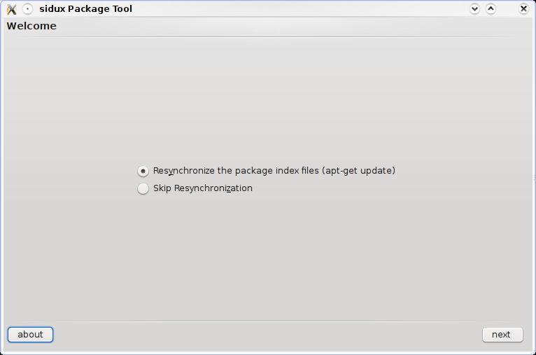
Auf < next > (weiter) klicken.
Wenn < show details > (Details anzeigen) angeklickt wird, kann gesehen werden, was geschieht.
Hier die Ausgabe der Aktualisierung des internen Paket-Indexes.
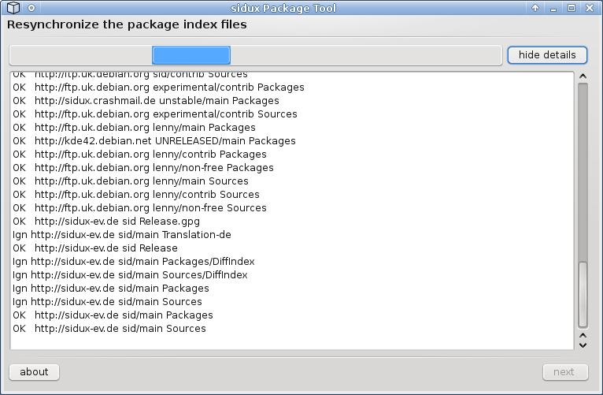
Nun wird angezeigt welche Änderungen vorgenommen werden.
Die angezeigten Dateien werden in diesem Falle installiert.
Farbig hervorgehobene Dateien werden aus Programm Abhängigkeitsgründen zusätzlich installiert bzw. aktualisiert.
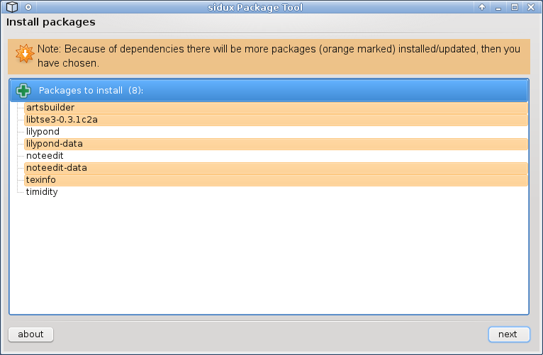
Auf < next > (weiter) klicken um die Installation der entsprechenden Programme zu starten.
Der Download-Dialog
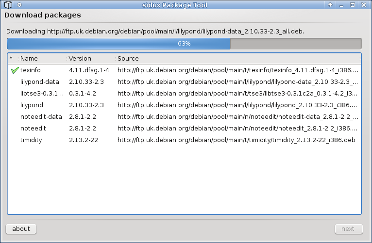
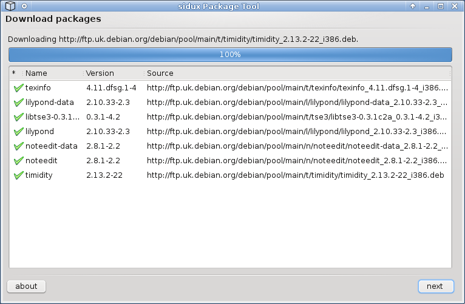
Ist der Download abgeschlossen, auf < next > (weiter) klicken.
Der Installationsdialog
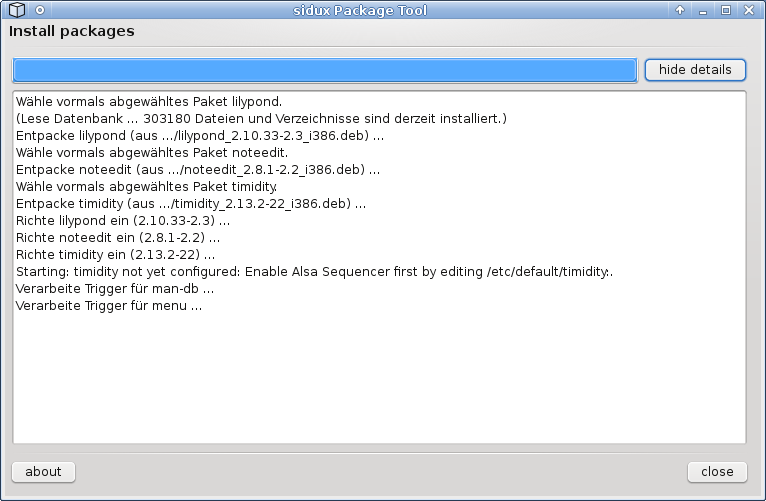
Wenn die Installation beendet ist, auf < close > (schließen) klicken.
Wenn Sie mehr über den Installationsprozess unter Debian erfahren wollen, konsultiern Sie bitte die entsprechenden Howto's und/oder "man pages" (man apt, man apt-get,...).
Das installierte Programm starten
Nun wählen Sie die entsprechende Abteilung aus, in diesem Fall "Musik" und markieren das Programm (hier NoteEdit).
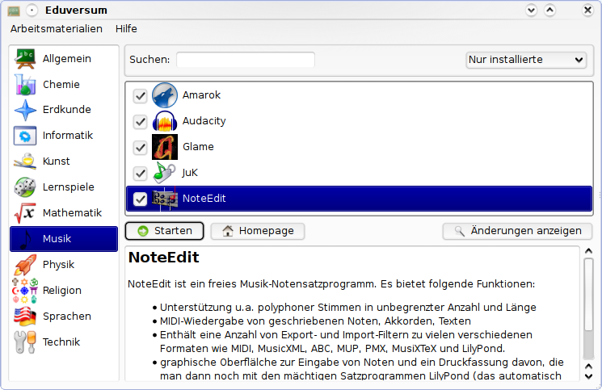
Klicken Sie < Starten >.
Nützliche Links
- seminarix Homepage: http://www.seminarix.org
- sidux Homepage: http://www.sidux.com
- sidux Handbuch: http://manual.sidux.com/
- sidux wiki: http://www.sidux.com/module-pnWikka.html
Die Programm-Übersichten wurden mit kSnapshot erstellt.
Ein dank an Roland Engert (RoEn) und Dinko Sabo (cobra) für die tatkräftige Unterstützung, sowie dem ganzen "edu Team".
Copyright © 2009, Hendrik Lehmbruch: CC-by-SA 3.0